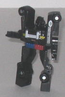

Difficulty of Transformation : Very Easy
Color Scheme : Light milky gray, dark blue, and some light red, yellow, and silver
Individual Rating : 3.5
Allegiance
: Autobot
Size
: Mini-Con (3-pack)
Overall Rating
: 5.5
 Divebomb
Divebomb
Difficulty of Transformation
: Very
Easy
Color Scheme
: Light milky gray,
dark blue, and some light red, yellow, and silver
Individual Rating
: 3.5
Divebomb's vehicle mode
is a helicopter, and proportions-wise this is pretty nice mode-- most helicopter
Transformers have somewhat short "tails", but not with Divebomb-- his helicopter
proportions are very convincing. What he's really lacking, though, are
sizable wings-- I mean, I know helicopter's wings are nearly as large as
planes, but he has some STUBBY little side wings., and the fact that the
robot arms are folded up underneath them makes them look even more stubby.
(Though the fact that the tips of the robot arms are molded to look like
missile launchers is a nice touch to help them fit in with the vehicle
mode slightly more. There's also a rather noticeable gap between the top
of the wings and the main body piece of the vehicle. Otherwise this mode
looks pretty nice, though, with pretty good mold detailing, even to the
point of there being miniature "rivets" in the wings, and a fair amount
of paint detailing-- I especially like the light red stripes on the propellers,
which can twirl around pretty nicely. The Minicon port is on the underside
of the cockpit in this mode.
Divebomb's robot mode,
though... what the!? I mean, the cockpit-chest looks alright, and even
though it looks a tad goofy, I can even deal with the propeller-head. But
his arms can only move to the SIDES at the elbows, an utterly useless point
of articulation, and other than that he can't move at all in this mode.
He's almost literally a brick. And his tailfin-legs look really, REALLY
od. He's basically standing on sticks, to the point where they almost look
like stands and he's actually supposed to be hovering in the air in robot
mode, like
Beast Machines Obsidian
. There's
a little slot that his lower legs are supposed to peg into his tailfin-legs,
but they don't fit in their at all.
Divebomb is a poor excuse
for a Minicon. His robot mode is absolutely awful in every respect, and
although his vehicle mode is decent with only a few flaws, it'd have to
be made of gold and be able to be remote-controlled and be able to actually
fly for it to negate his horrible robot mode.
 Firebot
Firebot
Difficulty of Transformation
: Very
Easy
Color Scheme
: Moderately light red,
dark charcoal gray, and some metallic silvery blue, metallic gunmetal gray,
silver, and light pea green
Individual Rating
: 8.6
Firebot's vehicle mode
is a fire truck. This is a pretty nice mode. Normally, it'd just essentially
be a red block, nothing to get too excited over, but the semi-futuristic
angular styling to the figure, the two rotatable water guns on the front,
and the very nice mold detailing all make it look great-- if you look carefully,
you can even see details as tiny as a ladder near the rear end of this
mode! He's got a fair enough amount of paint detailing as well, though
another paint or two on the rear end or on a few parts of the robot mode
couldn't have hurt. His color scheme of light red and charcoal gray isn't
the best or the most attractive, but it's certainly not a bad color scheme
and is definitely appropriate for a fire engine. Firebot's Minicon port
is on the underside of this mode, near the center.
Firebot's robot mode
not only looks utterly awesome, it's a bit original in its design, as well.
The legs are of a rather unique construction, having rather large feet,
angular upper legs, and an almost chicken-walker-like construction without
being too skinny. His large upper arms and smaller lower arms with the
rotatable water guns give Firebot the impression of being a pretty tough
little guy, as does his MEAN-lookin' face-- he looks like he has a knight's
mask on, and his narrowed optics make him look like he's ready to take
on any Decepticon ten times his size. His articulation is decent for a
Minicon, too-- he can move at the shoulders, the hips, the knees (though
more backward articulation there than forward articulation), and from side-to-side
at the elbows.
Firebot is an awesome
Minicon in both modes, with an original yet great design. He's easily the
best of the Wave 1 Classics Minicons-- he really doesn't suffer from anything
but the most minor flaws.
 Strongarm
Strongarm

Difficulty of Transformation
: Easy
Color Scheme
: Black and some silver,
dark metallic blue, dull metallic red, and dull greenish yellow
Individual Rating
: 4.4
Strongarm's vehicle mode
is a police car. Overall, the proportions of this mode are pretty good,
ignoring the obvious compromises that have to be made for a toy this small,
such as the hinges at the rear bumper. Black makes a nice color scheme,
though Strongarm is desperately, DESPERATELY begging for more paint applications.
None of his windows are even painted, for Primus' sake! His sirens look
nice, as does his front bumper, and the miniature "Police District" logos
on his sides are cute, but geez, I can't believe they didn't even paint
the windows, especially since the only parts painted in his robot mode
are his optics as well. Strongarm has two Minicon ports, both located on
the underside of this mode, to the rear of center.
Strongarm's robot mode
isn't as terrible as Divebomb's, but it's still pretty bad. For one thing,
his arms can move back and forth at the elbows, and he has a useless side-to-side
point of movement at his knees, but that's it as far as articulation goes.
His transformation mostly consists of spreading the two halves of entire
vehicle mode apart, and it's REALLY hard to do without popping some parts
off. The end result of the transformation isn't that hot, either-- the
halves don't quite straighten out in respect to each other, so Strongarm's
arms and legs are at a slight angle to each other. His legs also look extremely
awkward, jointed and rigid as they are, and the way his elbows actually
come out of his arms close to Strongarm's shoulders, that looks pretty
weird, too. On the plus side, having the front side of the police car mode
turn upside-down for the chest helps to give Strongarm a bit of originality,
and his face sculpt is pretty detailed mold-wise, too. Too bad you can't
see it easily because of the lack of paint...
Strongarm has nice vehicle
proportions, but he suffers from an extremely lack of mold and paint detailing
and his robot mode is pretty darned awkward. Still... he's better than
Divebomb, I guess...
Of the Night Rescue Team, Firebot is the only good Minicon of the bunch-- he's thoroughly awesome, but it's a shame you have to buy such bad toys as Divebomb and Strongarm in order to get him. After all of the "mainline" Classics deluxes and voyagers, if you really want to get Firebot or love Minicons no matter what they look like, than go ahead and pick up this set. Otherwise, spend your hard-earned money on something else.
Review by Beastbot